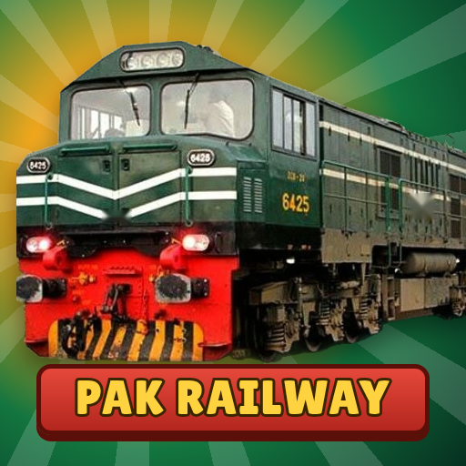

Pak Railway Simulator
Train driving game · Android
Drive famous Pakistani trains on real routes: stop on time at every station, obey signals and speed limits, and collect locomotives.
An unofficial game, not affiliated with Pakistan Railways.